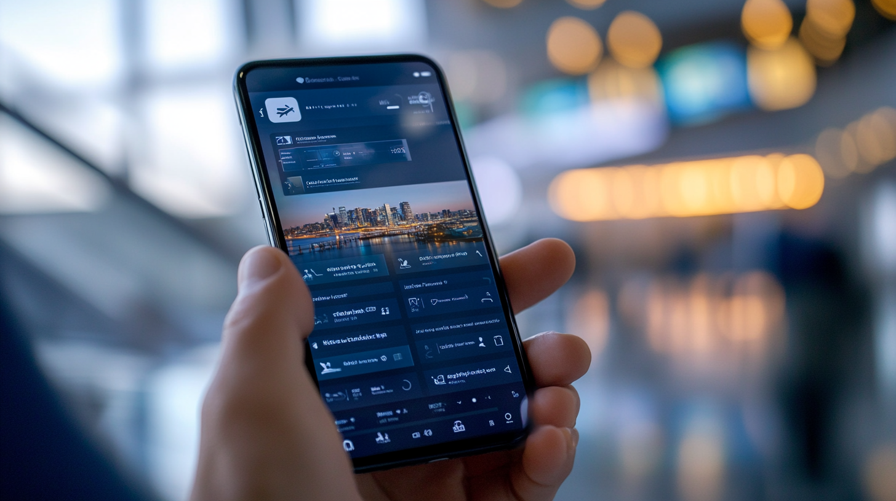

Discover how AI booking agents streamline travel planning with real-time automation, smart decision-making, and secure reservations for a hassle-free experience.
In an era where technology continuously reshapes our daily experiences, AI booking agents are revolutionizing the travel industry with unprecedented efficiency and sophistication. These intelligent systems are transforming the traditional booking process, leveraging advanced algorithms and machine learning to deliver personalized travel experiences.
From flight reservations to hotel bookings, these digital assistants are streamlining every aspect of travel planning, making it more accessible and efficient than ever before. The integration of applied AI into travel booking represents a fundamental shift in how we approach journey planning and execution.
AI booking agents are raising the bar, merging automation’s speed with the personalized touch of a human travel expert
The emergence of agentic AI in travel planning marks a significant evolution in how we approach travel arrangements. These sophisticated systems go beyond simple automation, offering intelligent assistance adapting to individual preferences, while optimizing for both cost and convenience.
By processing vast amounts of data in real-time, these systems can make complex decisions humans would take hours to analyze. The transformation of the travel industry through AI technology represents one of the most significant advancements in modern travel planning, fundamentally changing how we think about booking travel arrangements. With every booking, AI learns from traveler preferences, continuously improving recommendations for a smarter, more tailored experience.
Modern AI booking agents utilize a complex network of algorithms, machine learning models, and natural language processing capabilities. These systems continuously analyze market conditions, process user preferences, and evaluate countless booking options simultaneously.
The integration of advanced pattern recognition allows these platforms to identify optimal travel arrangements while considering numerous variables such as pricing trends, availability, and seasonal factors.
Deep learning networks enable these systems to understand complex travel requirements and translate them into actionable booking decisions.
Natural language processing capabilities enable travelers to communicate their needs conversationally, making the booking process more intuitive and accessible.
The journey from basic online booking platforms to sophisticated AI booking agents reflects the rapid advancement of artificial intelligence in consumer applications. Today’s systems can handle intricate multi-leg journeys, complex itineraries, and real-time adjustments with remarkable precision. By streamlining the booking process, AI agents have made travel planning faster, easier, and less stressful for travelers.
The continuous refinement of these systems has led to increasingly accurate and personalized travel recommendations, transforming what was once a time-consuming task into a streamlined, efficient process. Today’s AI platforms anticipate traveler needs, suggest better options, and seamlessly handle complex itineraries with minimal effort.

As an autonomous booking agent manages your travel plans, it coordinates multiple aspects simultaneously, from finding optimal flight times to securing the best hotel rates. These systems excel at handling complex itineraries involving multiple bookings, ensuring all elements of your journey align perfectly.
The ability to process vast amounts of data enables these agents to identify opportunities and deals human agents might miss, while maintaining a holistic view of the entire travel experience.
Through sophisticated analysis of historical data and current market conditions, these systems can often secure better deals and more convenient arrangements than traditional booking methods.
They can also predict potential travel disruptions and suggest proactive solutions before problems arise.
AI booking agents leverage sophisticated algorithms to evaluate thousands of options in seconds, considering factors like price fluctuations, availability, user preferences, and historical booking patterns. These systems can anticipate market changes and make proactive booking decisions to secure the best possible arrangements for travelers.
Continuous learning capabilities enable increasingly accurate predictions and recommendations over time, leading to better outcomes for users across multiple bookings. Machine learning models analyze past booking data to identify patterns and preferences which might not be immediately obvious to human agents. This deep understanding of user behavior enables the system to make highly personalized recommendations while optimizing for both cost and convenience.
The systematic approach of modern AI booking agents ensures comprehensive coverage of all travel details. From initial search to final confirmation, these systems maintain vigilant monitoring of reservations, automatically adjusting to any changes or disruptions that might affect travel plans. Constant oversight provides travelers with peace of mind and reduces the need for manual intervention, while ensuring all aspects of the booking process are optimized for efficiency and accuracy.
Automation extends beyond simple bookings to include features like automatic rebooking during travel disruptions and proactive notification of potential issues. These systems can also coordinate with multiple service providers simultaneously, ensuring seamless integration of all travel components.
In an age where data protection is paramount, AI booking agents employ robust security measures to protect user information. These systems utilize advanced encryption protocols and secure data handling practices to ensure the safety of personal and financial information throughout the booking process.
The implementation of sophisticated security measures helps maintain user trust while enabling seamless booking experiences. Regular security audits and updates ensure these systems stay ahead of emerging threats while maintaining compliance with global privacy standards.
Multi-factor authentication and advanced fraud detection systems provide additional layers of protection for sensitive personal and financial transactions.
Multiple layers of security safeguard sensitive information, from payment details to travel preferences. Typical AI booking agents implement industry-standard encryption and regularly update their security protocols to address emerging threats. This commitment to data protection helps build trust with users while ensuring compliance with global privacy regulations.
The continuous monitoring and updating of security measures helps prevent unauthorized access and protects user data integrity, while sophisticated anonymization techniques ensure personal information remains private even during data analysis and system improvement processes.
Regular penetration testing and security assessments will help identify and address potential vulnerabilities before they can be exploited.
TravelAI believes the future of travel planning lies in the continued evolution and refinement of AI booking agents. As AI evolves, booking experiences will become even more seamless, predictive, and highly personalized.The integration of artificial intelligence in travel planning has already transformed the industry and future developments will only enhance these capabilities further.
For travelers seeking efficiency, convenience, and optimal value, AI booking agents represent the next generation of travel planning technology, poised to continue revolutionizing how we plan and book our journeys in the years to come. With ongoing advancements in artificial intelligence and machine learning, these systems will become more capable and indispensable for modern travelers.